Some memories will eventually become stories we tell years from now.
Thank you for being part of one of the most memorable chapters of my college life, Kak Ge.
Keep growing, keep trying new things, and keep being the person who brings good energy wherever you go.
Here’s to the next chapter, the new adventures, and all the good things waiting ahead.
Happy 22nd, Kak Ge! ⭐
— Hilma
Before you cry, remember: you're 22 now. Act accordingly.
WELCOME TO THE
Happy 22,
Kak GE!
Yippiee, selamat ulang tahun yang ke-22 Kak Ge. Semoga tahun ini menjadi tahun yang baik untuk terus bertumbuh dan mengeksplore dunia. Bahagia dan sehat selalu, and welcome to 22!!
Open the memories ↓FOTO KAK GEkakge.jpg
“911 what’s ur emergency?!”
ONE CALL AWAY 22 / SEPTorang jago
SINCE DAY 1
Welcome to our
memories museum.
Click a photo to open the museum view.
MEMORY 01imgjpeg(6)
MEMORY 02imgjpeg(7)
MEMORY 03imgjpeg(3)
MEMORY 04imgjpeg(5)
MEMORY 05imgjpeg(12)
MEMORY 06imgjpeg(1)
MEMORY 07imgjpeg(8)
MEMORY 08imgjpeg(9)
MEMORY 09imgjpeg(2)
CAPTION
Flashback
moment.
Flashback moment-moment dari awal kenal Kak Ge. First time kenal, lalu ngucapin ultah padahal belum deket-deket banget, foto bareng di IONES, ikut proker LMT punya Kak Gege, foto book of the year, ikut proker talentscape punya Kak Gege lagi, MUSMA omg detik-detik akhir periode itu lanjut lagi ketemu di raker dan dokumentasi KWU, WKWKWK!! All too well banget.. :(
Awal kenal Kak Ge, jujur sebenarnya nggak ada minat buat berteman karena pas pra-PKKMB jarang lihat Kak Ge. But, suddenly entah ada dorongan apa tiba-tiba spontan pengen ngucapin Kak Gege ulang tahun WKWKWK, dan dari sana lama-lama jadi dekat, meski nggak yang sedekat itu di RL-nya xixixi. Kalau dipikir lagi, hidup memang penuh plot twist ya!
HER / 22
Gallery of a girl
who's turning 22!!
eight faces, one birthday girl ♡
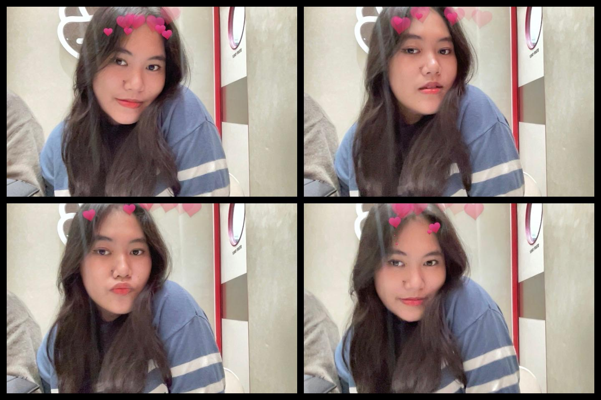
01 / moodboard face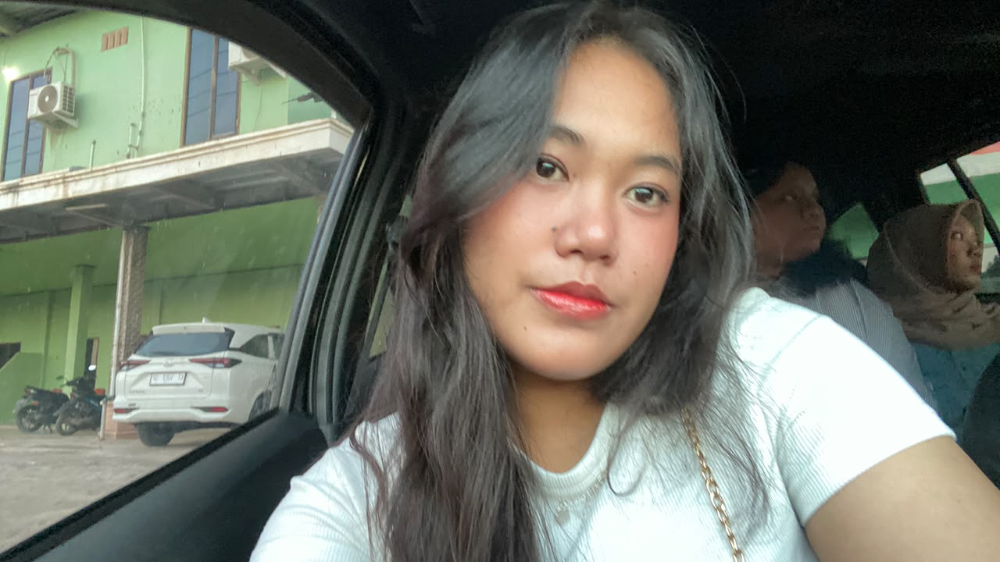
02 / passenger princess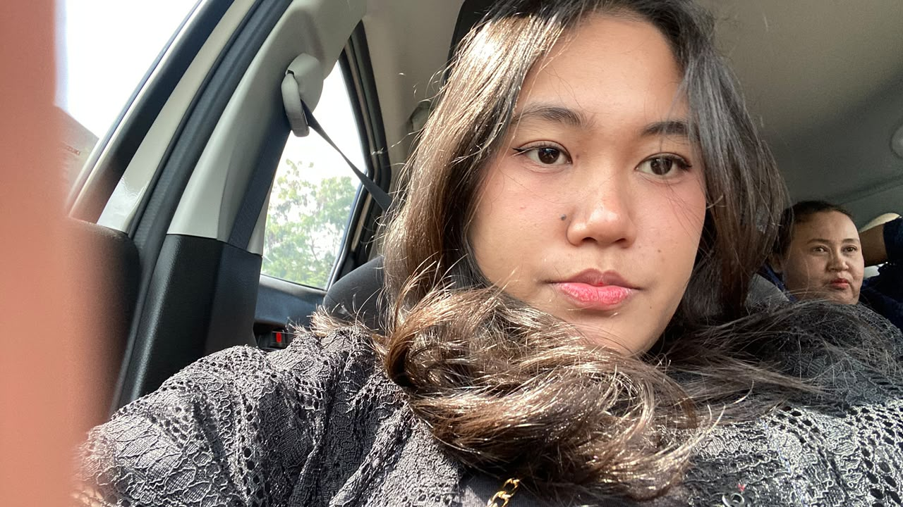
03 / one call away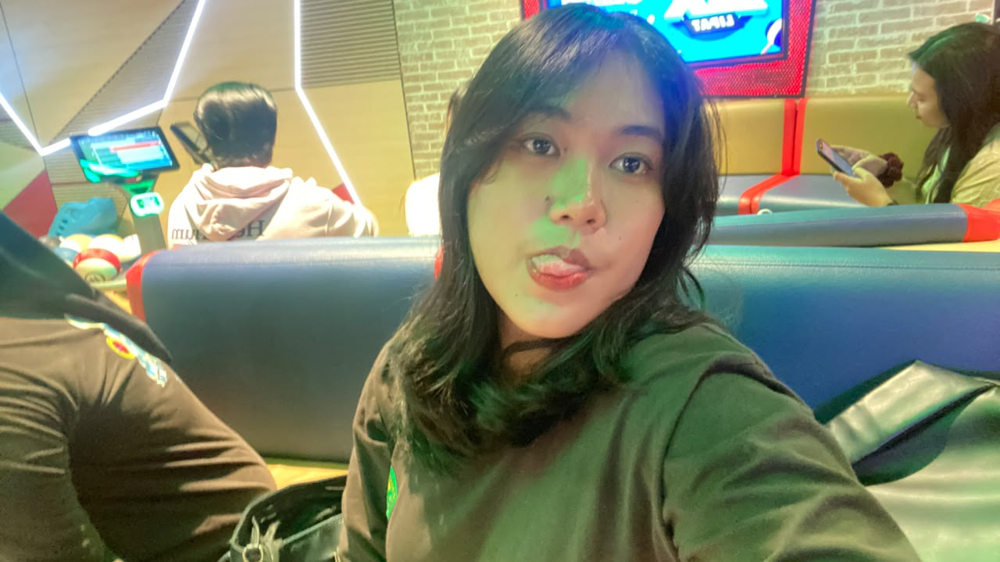
04 / arcade light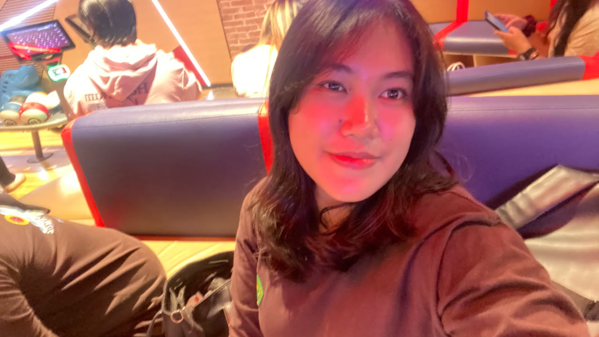
05 / red light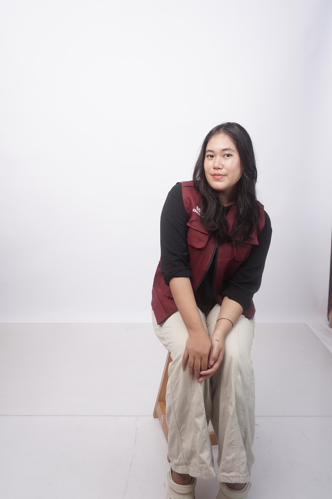
06 / studio day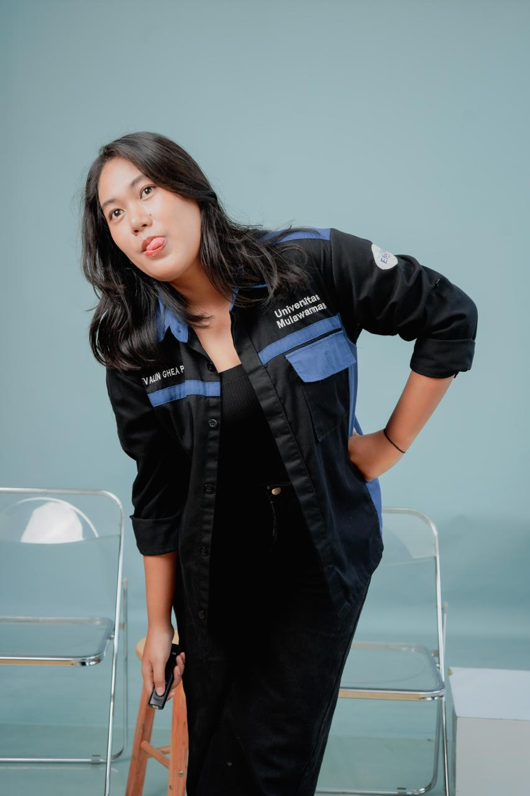
07 / denim certified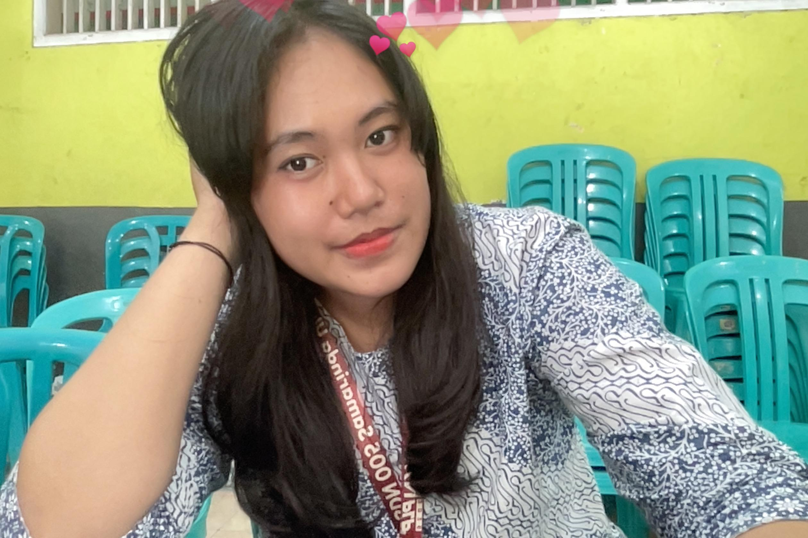
08 / birthday girlSTARRED / 22
Starred.
Words I’ll keep close.
Thank you for all the appreciation, advice, support, and affirmations you’ve given me throughout this past year. Every word you’ve said, especially the ones that made me feel seen and supported, will always stay with me. I’ll keep all of them close through this little star ⭐
Keep going and keep shining in whatever comes next in your life. There are still so many challenges waiting to be tried, so many stories waiting to be written, and so many beautiful things waiting to find you. And I hope, in the next chapters of your life, you’ll continue to meet kind people who remind you that all the good you’ve given to others will always find its way back to you.
I’m really grateful that our paths crossed, and that somewhere along the way, I got to know you beyond just being my senior. Thank you for being someone I could talk to, learn from, and feel safe sharing little pieces of life with.
I hope you’ll always remember that your words meant more to me than you probably realized. And just like you said, whenever life gets a little too heavy, I hope you’ll remember that you’re not alone either.
Here’s to all the places we haven’t been, all the things we haven’t tried, and all the memories we haven’t made yet. Semangat untuk chapter kehidupan selanjutnya, Kak Ge. You deserve all the good things coming your way. 🤍⭐
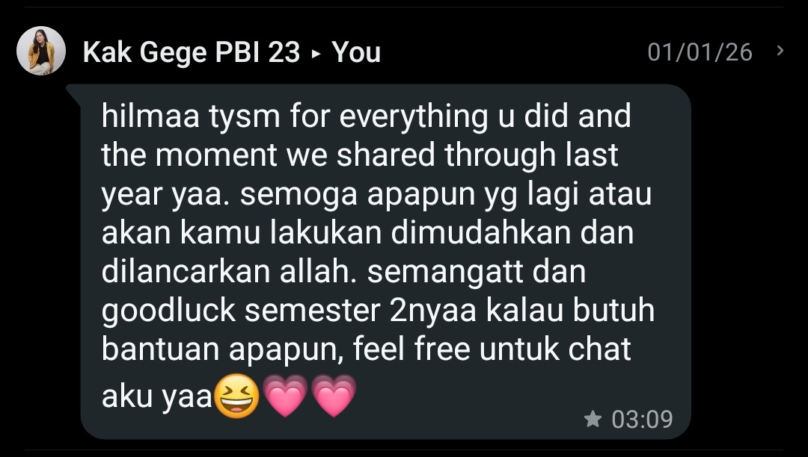
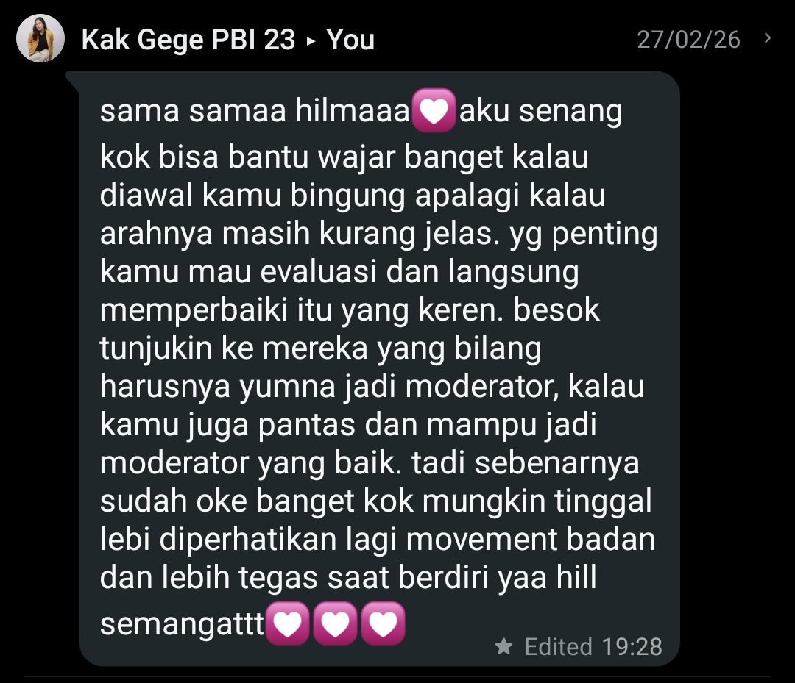
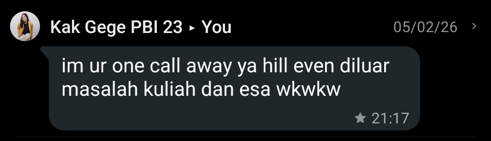
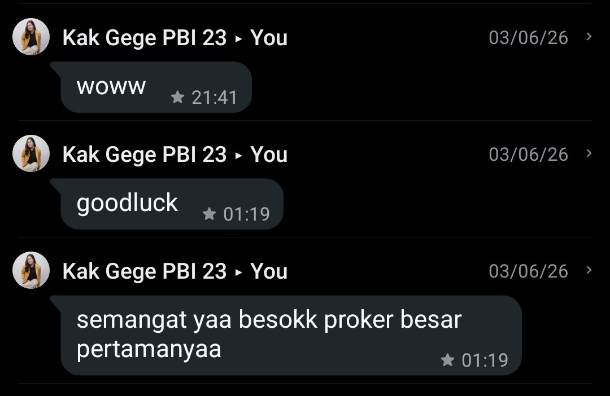
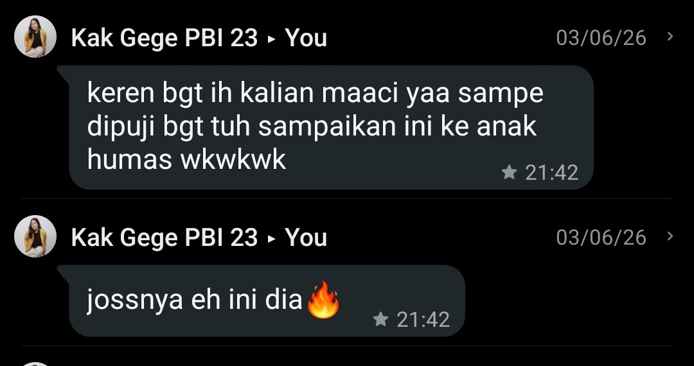
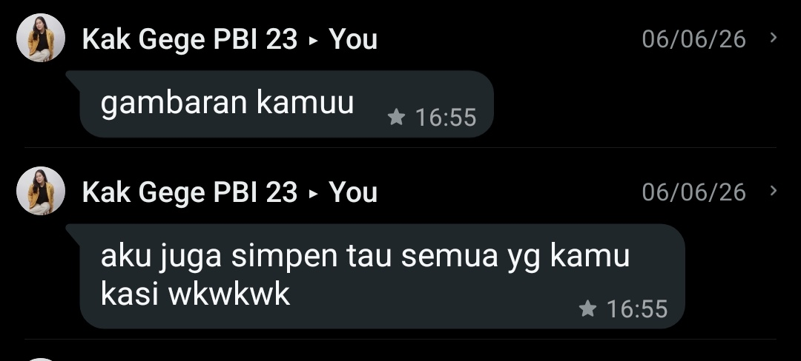
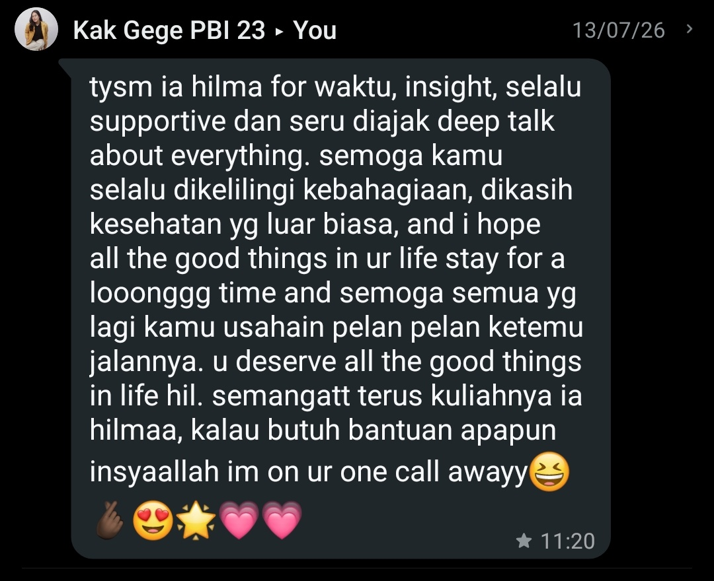
LETTER / 22FOR KAK GE
Kak gege, selamat ulang tahun ya.
Idk ini mungkin tahun terakhir kita saling reach out tentang dunia kuliah, berhubung after KKN Kak Gege akan fokus skripsi lagi. Semoga dipermudah dan dapat lulus dengan baik dan tepat waktu. Kak Gege, thank you udah banyak bantu aku ya, dari urusan kuliah sampai organisasi. Aku belajar banyak sekali dari Kak Gege.
Terima kasih karena sudah berusaha untuk selalu ada, membalas pesan dengan cepat, mendengar my little curhat, ngasih semangat, my teman sharing-sharing, membantu tugas wawancara, bantu larisin project KWU, turun langsung bantu latihan MC, sering membersamai rapat, dan menjadi satu dari my support system menjalani ESA ini.
Maaf ya Kak Ge, mungkin selama kita berteman ini aku ada salahnya, banyak kurangnya karena aku masih terus belajar memahami orang-orang. Nanti, apapun target hidup Kak Gege, semoga kita tetap bisa saling menjaga komunikasi, dan Allah bantu untuk membukakan jalannya.
Jujur sedih karena ingat lagi ini adalah tahun terakhir angkatan 2023, tapi at the same time ikut bangga karena bentar lagi dapat gelar S.Pd. Sehat-sehat terus orang jago, and long life iyeah. Thank you for all of your kindness, your trust, and also your support. Love Kak Ge selamanya <33
And maybe one day, we won't talk as often as we do now.
Maybe our conversation will become less frequent, our schedules will get busier, and life will take us to different places.
But i hope that whenever you look back at this little website, you'll remember that once, there was a younger girl who was genuinely grateful to have met you.
Thank you for being one of the people who made this chapter of my life a little warmer. Thank you for every "semangat", every piece of advice, every little help, every deep talk, and every moment you choose to shop up.
You once told me that you're only one call away. I hope you know that, in my own way, i'll be one call away too.
So here's to 22.
To the dreams you're chasing, the challenges you're about to face, the people you'll meet, and the places you'll go
May life be gentle with you. May you always find reasons to stay curious, keep growing, and keep becoming the person you're meant to be.
And if someday you forget how much you've helped someone,
I hope this little star reminds you. ⭐
Happy 22, Kak Ge.
You deserve all the good things coming your way. 💝
FUN FACT
Certified
Kak GE things.
- She loves alien character in Toy Story
- She loves monochrome colours
- Santaii, literally jago di segala bidang
- Social butterfly, humas sejati
- Jeans and also Converse gurl
- Crocs till she die
- “Kalau ada yang perlu dibantu jangan segan hubungi aku ya”
- Top tier Kopken fans
- Jedai gurl iyeah
- Harus ada kipas (must)
- She loves ABEABEABEABE
FUN 01fanart2
FUN 02kakge(9)
ABE 1
ABE 2
ABE 3